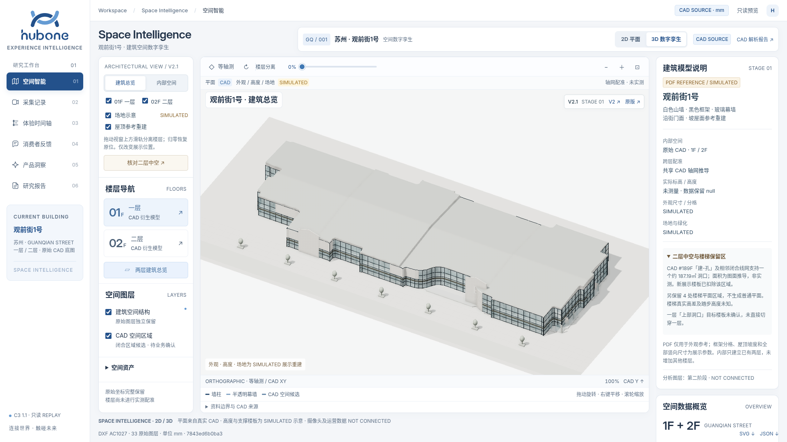
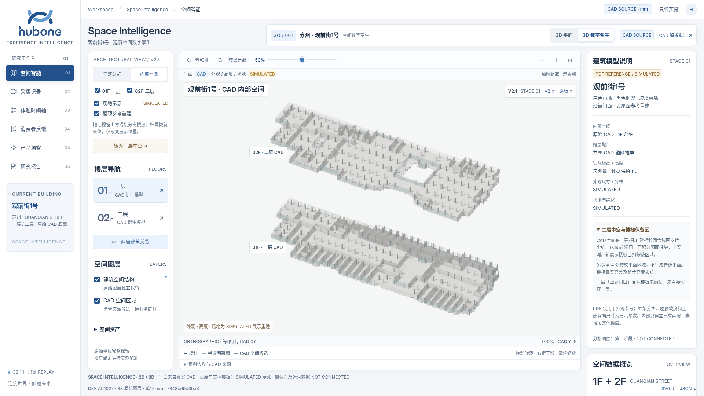
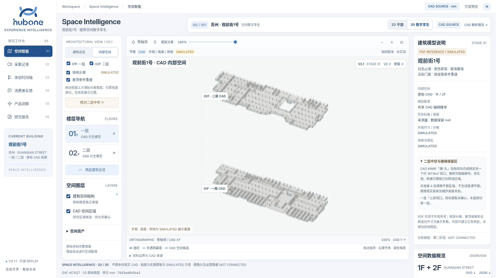
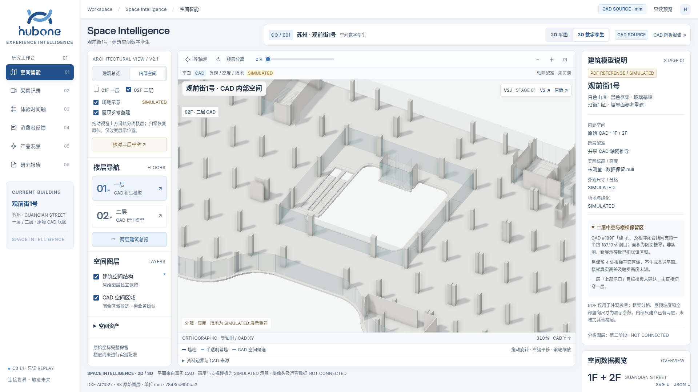
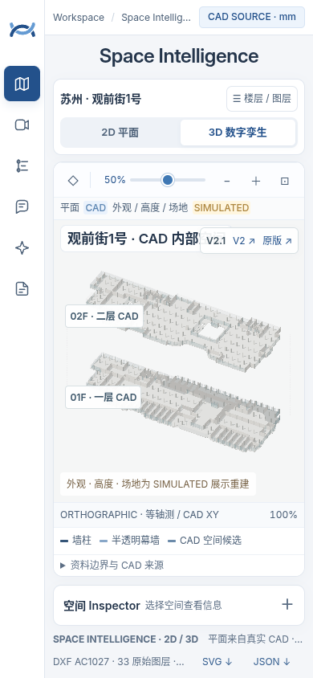
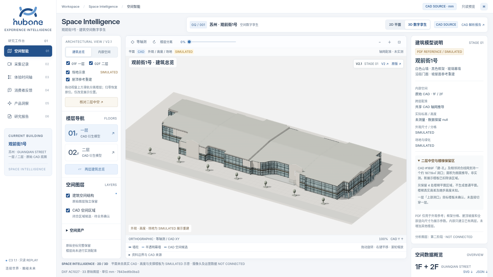
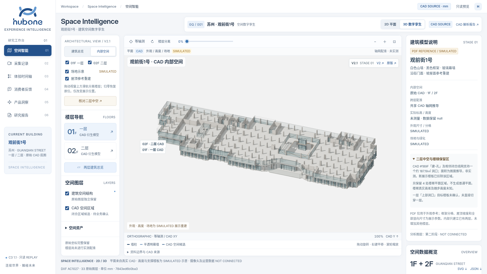
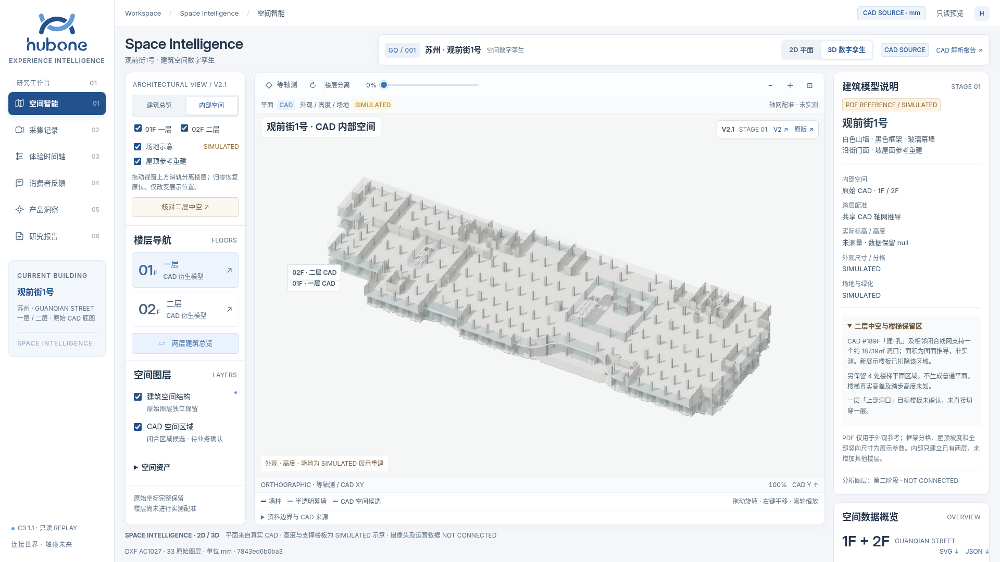

建筑总览与内部空间 · 美学统一
复用现有 V2.1 Three.js 场景、CAD 数据、页面框架和连续楼层滑轨。此入口仅供美学验收，原版、V2 和当前 V2.1 保持原样。
建筑外观依据用户 PDF 参考重建，竖向尺寸与场地仍为 SIMULATED；CAD 洞口保持真实几何扣除。未开发摄像头、热力或路线。截图来自 Chromium / SwiftShader；手机图为浏览器触摸模拟，尚未在实体手机验证。
100 项专项检查通过。以下均为实际交互页面渲染，点击可查看原图。
















